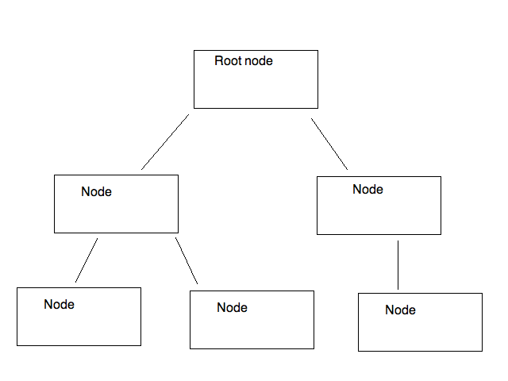

A tree is a commonly-used data structure to represent data
in a hierarchical manner. An example of a tree is shown below:

As can be seen, a tree structure resembles a real tree, but is upturned. It consists of a series of nodes, and each node can have one or more descendants. We can easily perform an operation on each node of the tree by starting at the root node, then looping through each immediate descendant in turn. Within a descendant, we loop through its descendants, and so on.
Trees have a variety of uses in computing, including:
A binary tree is a form of tree in which each node has two child nodes, a "left node" and a "right node".
This structure can be used to sort data. If you have an array of sortable data, such as numbers or words, you place the first member of the array inside the root node (the top node of the tree). With each subsequent item of data, you place the item in the left node if the data item is less than the item in the root node, and in the right node if the data item is greater than the item in the root node. If the appropriate child node is already filled with data, we descend the tree by moving down to that child node, and then comparing the new value to the value in the child node and then placing it in either the left or the right child node of that node.
This is probably best illustrated by example. Imagine you want to sort the numbers 29, 20, 17, 40, 25, 18, 1. How might you do that with a binary tree?
You put the first number (i.e. 29) in the root node of the tree:
The next number (20) is less than 29, so it gets placed in the left child node of the tree:

The third number (17) is less than 29 and less than 20, so first we descend the left node of the root node (containing 29) and reach the node containing 20. 17 is less than 20 as well, so it gets placed in the left child node of the node containing 20.

The fourth number (40) is greater than 29, so it gets placed in the right child node of the root node.

The fifth number (25) is less than 29 but greater than 20, so first we descend the left node of the node containing 29, to reach the node containing 20. Since 25 is greater than 20, we place it in the right child node of the node containing 20.

The sixth number (18) is less than 29, so we descend the left node of the root node to get to the node containing the number 20. 18 is less than 20 so we descend the left node again, to reach the node containing the number 17. 18 is greater than 17, so 18 is placed in the right child node of the node containing the number 17.

The seventh number (1) is less than 29, so we descend the left node of the root node to get to the node containing the number 20. 1 is less than 20 so we descend the left node again, to reach the node containing the number 17. 1 is less than 17, so 1 is placed in the left child node of the node containing the number 17.

On paper, create a binary tree containing these numbers in order:
389 843 9 8934 1 83 23 1124 532
Once we have placed the data in the tree, how do we actually retrieve it to display it (or operate it in some other way) in order?
What do we do if the left child node's own left child node also has child nodes? We simply repeat the process and keep going until we finally hit a node with no child nodes of its own.
Again this is probably best illustrated by example. Taking the tree produced above:
1 17 18 20 25 29 40
To implement a tree effectively we have to use a programming technique called recursion. The idea of recursion is that a function calls itself repeatedly until some condition is met. You can think of this as producing a stack of calls to the same function, one on top of each other. Then we stop recursing and descend the stack of function calls. To illustrate the concept here is some code to print out the numbers 1 to 10 using recursion:
def recursive_print(num, limit):
print(f"recursive_print(): parameters: num {num} limit {limit}")
if num <= limit:
print(f"num does not exceed {limit}, so calling recursive_print again with argument of {num+1}")
print(num)
recursive_print(num+1, limit)
print(f"Returning from recursive_print call with a parameter of {num}")
recursive_print (1, 10)
What happens when we run this?
Here is a diagram showing this example of recursion.

So how would we use recursion on a binary tree?
The walk() function from the os module allows you to "walk" a directory tree (note: not a binary tree) structure, starting at the root directory and recursively descending into subdirectories. For example:
import os
# walk the "src" directory and all its subdirectories
for directory in os.walk("src"):
print(directory)
Each directory is represented as a three-member tuple, containing the directory name, a list of subdirectories, and list of files.
class TreeNode:
def __init__(self, value):
self.left = None
self.value = value
self.right = None
pass).We can efficiently search a tree by virtue of its structure. There are two general techniques for searching a tree:
Depth-first search. This uses the recursive tree traversal technique we have examined already above, starting at the root node and then recursively descending into the child nodes. When the search term is found, we will return it. If the tree is not sorted, we need to keep track of which nodes have been visited and which have not, so we can explore the whole tree.
Breadth-first search. Rather than recursively descending the tree, we instead we consider each level one at a time. So if we have a tree organised as below:

we would first consider node A (the first level), then nodes B and C (the second level), then nodes D, E, F and G (the third level).
This uses the technique we have seen already to search a tree for a given key (index), namely recursion. We recursively search each successive child node, starting at the root node, until we find the key we are looking for.
For the search to be efficient, we need the tree to be sorted. We have seen already in topic 6 how to add items to a tree in sorted order. The search technique can be considered a specific case of depth-first search in which the tree is sorted and thus we know whether to select the left or right child node, and can ignore the other. For general depth-first search, we cannot guarantee this, and we will need to "backtrack" along branches of the tree to ensure all nodes are visited. In fact depth-first search is a general technique that works on graphs - to be covered later - as well as trees. As we will see, graphs are usually not sorted in any way.
To search a sorted binary tree we need to:
Hopefully you can see that the complexity is of O(log n) form and it scales well to large values of n, the number of items stored in the tree.
The table below shows the relation between the number of nodes in a sorted and balanced binary tree, and the number of searches. (A balanced tree is one in which the data is evenly added to the left and right sides of the tree. There are techniques for ensuring this, but we will not have time to cover these in this module; I will leave this up to you to research).
| Number of nodes | Number of searches |
|---|---|
| 1 | 1 |
| 3 | 2 |
| 7 | 3 |
| 15 | 4 |
| 31 | 5 |
| 63 | 6 |
| 127 | 7 |
| 255 | 8 |
| 511 | 9 |
| 1023 | 10 |
This section covers breadth-first search in some detail. It is of note that breadth-first search does not require recursion.
Note the order again in which we consider our nodes: A (the root node) first, followed by B and C (the root's child nodes), followed by D, E, F, and G (the child nodes of B and C).
Our aim is to try and search for a value in the tree. How might we do this? We check A first, adding it to a collection of nodes to be considered.
[A]
If A doesn't match, we move on to its child nodes - B and C - and remove A from the collection of nodes to be considered. So, once we've considered and rejected A, the collection will contain B and C.
[B C]
If B doesn't match, then we know we might need to consider its child nodes (D and E) so we add them to the collection of nodes. Because we are doing a breadth first search, though, and considering the tree "level by level", D and E must be added to the collection of nodes to be searched after C - because when we consider B, we will not have considered C yet, and C is on the same level as B. So after considering B, we remove it fron the collection of nodes to be considered - so we are left with:
[C D E]
Next we consider C. If C doesn't match, then we know we might need to consider its child nodes (F and G) so we add them to the collection of nodes to be considered. Because we consider each level left-to-right, these should again be added to the collection after D and E. If C doesn't match, again we remove it, so at this stage, the collection of nodes to be considered will be:
[ D E F G ]
Hopefully you can see that it has linear O(n) complexity, dependent on the number of nodes, and thus is not especially efficient when it comes to simple trees. The use of breadth-first search becomes more apparent when we look at graphs; I am introducing the algorithm here so that you understand it when we begin the graphs topic.
We use a queue here, because with the breadth-first search, we process the nodes in the order they are added. In other words, the node we add first is the node we process first. We can use the standard library collection collections.deque to do this. A deque is a double-ended queue: a queue which you can add to and remove from both the front and back of. However, here we are just using it as a regular queue.
Here is an example of using a deque as a regular queue. Note how we use append() to add to the deque, and popleft() to remove from it.
import collections
q = collections.deque([])
q.append(123)
q.append(456)
q.append(789)
print(q.popleft())
print(len(q))
I have said several times that we test whether each node 'matches'. What exactly do we mean by this? We'd typically use a tree to store and efficiently search for data as an alternative to hash tables. In other words, each node would contain a key/value pair, such as "1smitj01"/"John Smith" for the key and value respectively in a student records system. In Python, this would probably be stored as a tuple (if we didn't want to change the values) or two-member list (if we did). So we could search the tree for a given key (index), and test each node we find in breadth-first (or depth-first) search to see if its key is the key we are searching for. If it is, then we return the value.
Start with either your own tree from the trees topic (if you have completed the week 6 exercise) or the pre-written tree solution at GitHub